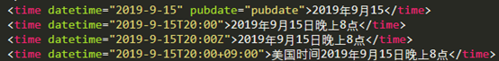

1.html5的优点：
①对人友好，更加语义化，更直观，增加了代码的可读性。
②对计算机友好，浏览器更容易解析，搜索引擎更容易抓取文档内容。
③代码更加的简洁。
2.新增的布局标签：
Article：定义一个独立内容区块，一篇文章，一个视频等；
Section：定义一个区域，如文章的章节等；
Header/footer：定义一个头部/尾部；
Aside：定义侧边栏；
Nav：定义目录导航；
Hgroup：标题分组，通常放在header里面；
Address：地址，联系信息等；里面的内容回以斜体显示；
Figure：对其他媒体元素进行组合，比如图像、图表等。
Figcaption：用来给figure定义标题；
Time：
①Time元素代表24小时中某个时刻或某个日期，表示时刻时允许带时差。它可以定义很多格式的日期和时间。
②Datetime属性中日期和时间要用T分割，T表示时间。时间加上Z表示给机器编码时使用utc标准时间，表示向机器编码另一地区时间，如果是编码本地时间，则不需要添加时差。
③Pubdate属性是个可选标签，加上他搜索引擎可以很方便识别出那个日期是文章、新闻的发表日期。

3.移动端实例：
①Name=”viewport” 屏幕设定
②Maximum-scale=1.0,minimum-scale=1.0;initial-sacle=1.0 最大最小缩放比例为1（其实就是不允许带年纪缩放）
③User-scalable=0,width=devive-width 设定内容和设备的屏幕等宽、等高
④Overflow:auto 内容超出父元素容器后自动加滚动条
⑤Text-decoration:none 给a标签去掉下划线
⑥List-style-type:none 把列表前面的点去掉
⑦Display:inline 在同一行显示
⑧Font-size:10pt 设置字体大小